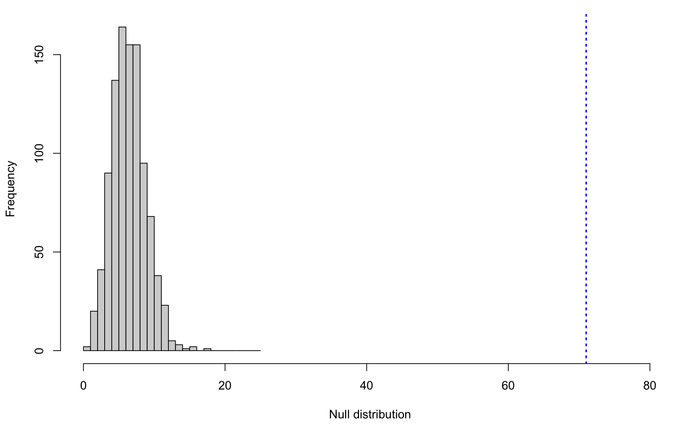
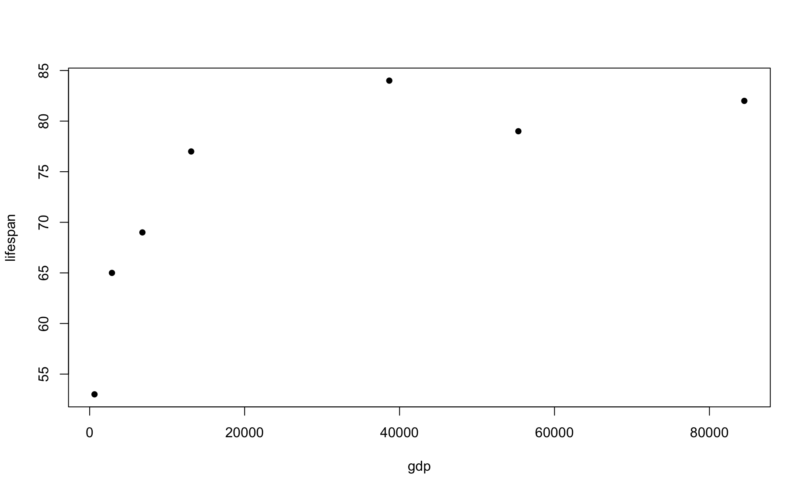
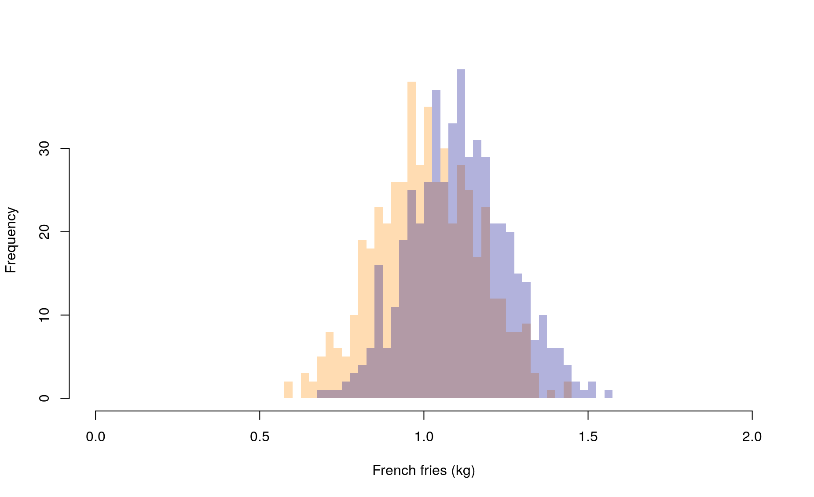
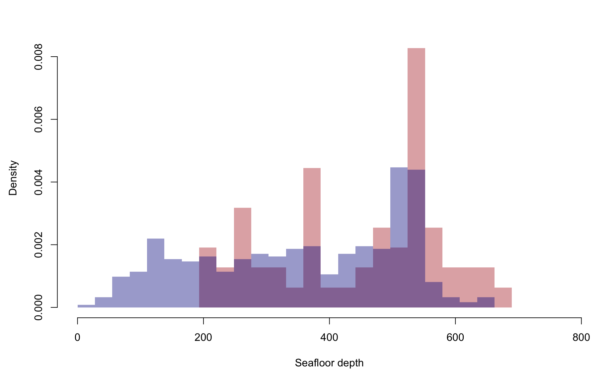
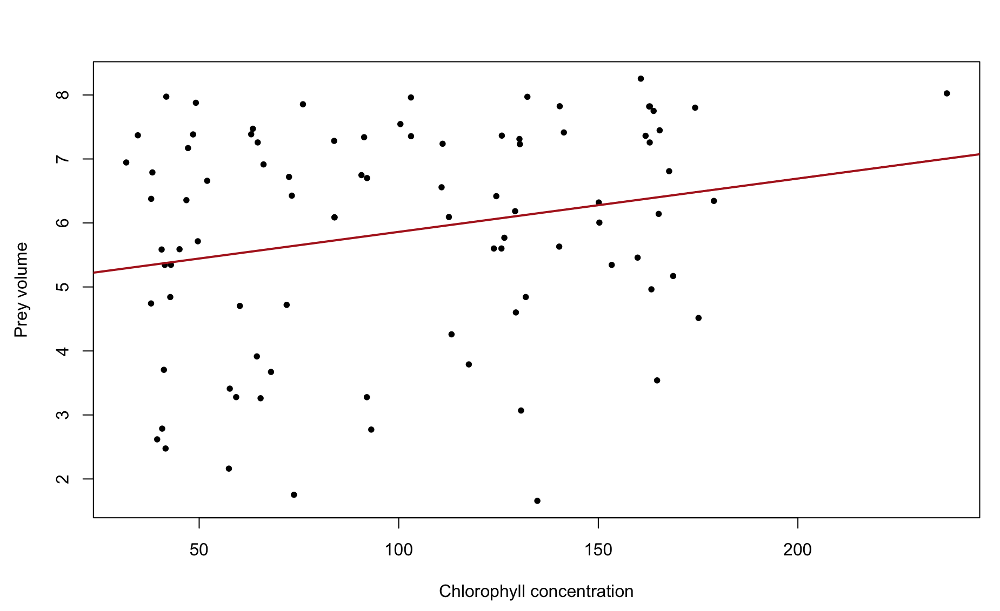
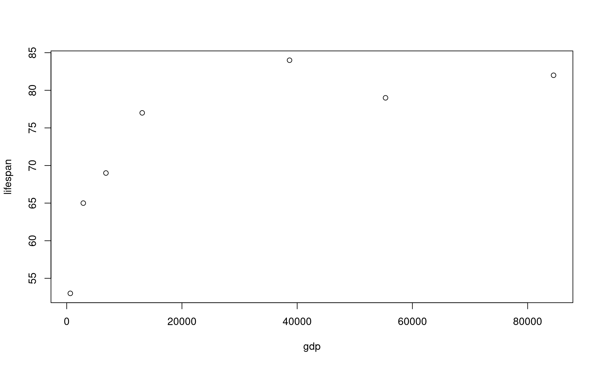
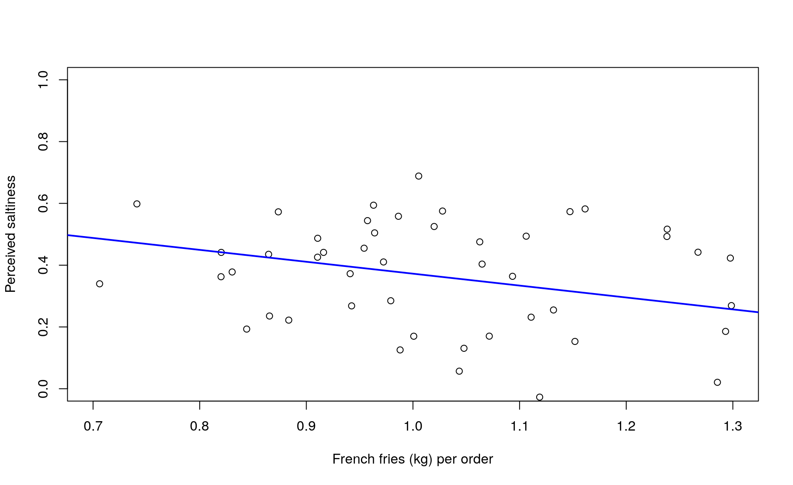
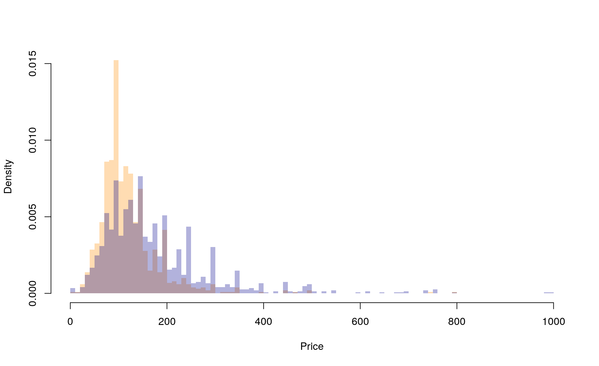
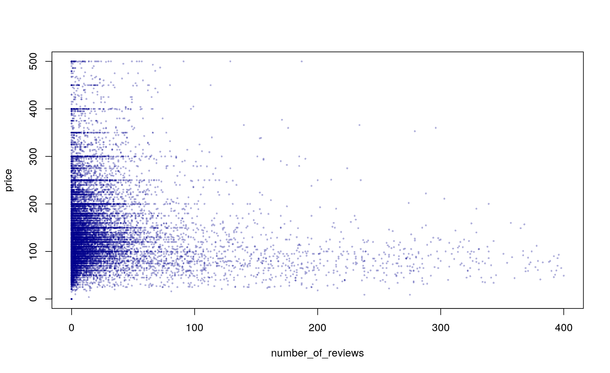
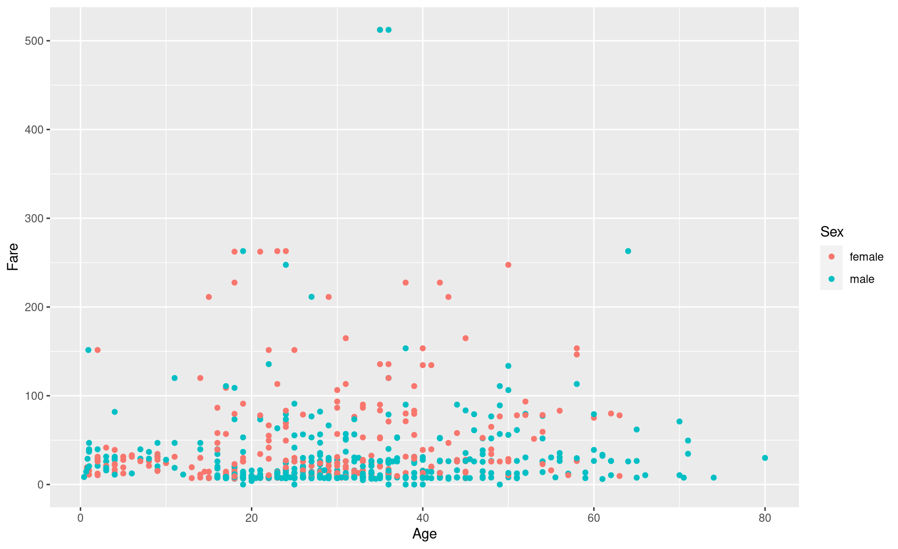

Module 18 Significance statistics
Learning goals
- How to interpret p-values
- How to decide which statistical test to apply to your data
- How to conduct basic significant tests in
R - How to interpret the results of those tests
p-values
We won’t go into statistical theory here. But every statistical test, at the basic level, is asking whether the patterns we observe in our data are actually meaningful. Are those perceived patterns reflecting real patterns, or is it possible to perceive those patterns when the underlying process is purely random chance?
That is what a p-value tells you: the probability that the pattern you see in your data is actually the product of random, meaningless chance. The lower the p-value, the less likely it is that the pattern is a product of chance, and the higher the chances that the pattern is real.
Researchers tend to use a p-value of 0.05 as the threshold for a meaningful, or “significant” pattern. When a statistical test returns a p-value of 0.05 or less, we consider the pattern to be statistically significant. A p-value of 0.05 means that there is a 5% chance (one in twenty) that the pattern in your data is the product of chance alone.
Please note that there is nothing magical about this number – a p-value of 0.049 is practically the same as 0.051, but only the former would be considered significant. The 0.05 threshold is just a simple heuristic – a way of simplifying your statistical results into a binary concept: significant or not.
Finally, please also note that statistical significance is a tricky thing because it is influenced by both the patterns in your data as well as by the amount of data you are working with. A larger sample size is going to allow you to identify more nuanced patterns in your data, and those patterns will achieve a lower p-value thanks simply to the number of samples you have.
Conversely, a pattern driven by meaningful real-world processes can be obscured by low sample sizes. If your sample size is too small, you may not be able to produce significant p-values even though the pattern is real.
Tests for different data types
Most data come in two general forms:
1. Categorical data represent categories. For example, we could have a variable named pet with a few discrete levels: “dog,” “cat,” etc. The types, or levels, of categorical data are also referred to as treatments. In R, categorical variables are usually referred to as factors.
2. Continuous data represent numerical values. For example, let height be a variable representing numerical values for people’s height. Note that, for the time being, we will consider integers and count data to fall within this category.
Whenever you plot data or ask a statistical question, you are combining data types in a specific way: a bar graph, for example, compares two categories (i.e., the individual bars) of numerical data (i.e., bar height). And, by grouping the data by category, you are implying that the category to which a data point belongs has some impact on its value. In other words, the value is dependent upon the category. Conversely, the value is assumed to have no impact on category. Category, therefore is the independent variable.
Each combination of data types calls for a certain type of plot and a certain type of statistical test.
Here is an overview of what we will cover below:
| Question | Independent | Dependent | Test | Plot |
|---|---|---|---|---|
| Comparing 2 datasets | Categorical | Numerical | t-test | Bar graph or histograms |
| Comparing 3 or more datasets | Categorical | ANOVA + Tukey HSD | ||
| Categorical | Categorical | Chi-square | ||
| Association / Relationship | Numerical | Numerical | Regression | Scatterplot |
Comparison tests
To practice basic statistics, we will create our own fake data.
Scenario: You are the lead author on a landmark study that investigates the portion sizes in fast food restaurants. You place 50 orders of large fries from one franchise and 50 orders from another, then weigh each order.
We can create a fake dataset by drawing numbers from random distributions:
# Set starting point for random number generator
set.seed(2)
# Franchise 1
sample1 <- rnorm(n=50, mean=1, sd=.15)
# Franchise 2
sample2 <- rnorm(n=50, mean=1.1, sd=.15)You can see that we have made these two datasets using slightly different distributions: the mean for Franchise 1 is 1.0 and the mean for Franchise 2 is 1.1. So we know the truth: that these two distributions are, in fact, slightly different. The question is whether we can conclude that they are different given the relatively small sample sizes (n=50) we are working with.
So for now, let’s pretend we don’t know what the true means of these two sample sets are. Let’s pretend that all we have done is weighed and eaten a ton of french fries, and now we want to ask some research questions about our sample data.
First, we want to know if there a difference in the amount of food you get from these two franchises? Do the two franchises give you the same amount of food (by weight)? This is a comparison question. We are asking: based on our samples, can we conclude that two things (Franchise 1 and Franchise 2) are meaningfully different?
First, Let’s look at our data with some histograms.
par(mfrow=c(2,1))
hist(sample1,
breaks=seq(0,10,by=.05),
col=adjustcolor("dark orange",alpha.f=.3),
border=NA,
main=NULL,xlab="French fries (kg)",xlim=c(0,2))
hist(sample2,
breaks=seq(0,10,by=.05),
col=adjustcolor("darkblue",alpha.f=.3),
border=NA,
main=NULL,xlab="French fries (kg)",xlim=c(0,2))
Comparison tests ask whether two distributions are different. It is often easier to gauge that difference when you superimpose one distribution on top of another (we do this by adding add=TRUE as an input in the second histogram).
hist(sample1,
breaks=seq(0,10,by=.05),
col=adjustcolor("dark orange",alpha.f=.3),
border=NA,
main=NULL,xlab="French fries (kg)",xlim=c(0,2))
hist(sample2,
breaks=seq(0,10,by=.05),
col=adjustcolor("darkblue",alpha.f=.3),
border=NA,
main=NULL,xlab="Price",xlim=c(0,2),
add=TRUE)
Okay, these two distributions certainly look a bit different, but there is also a high degree of overlap. If we lumped these data together and randomly picked a value from the pile, it would be hard to predict which franchise the data point belongs to.
To add to our uncertainty, maybe the pattern we are seeing here is just a vestige of our relatively low sample size. What if we sampled another 200 restaurants? Are we confident that we would find this same pattern?
Better do a statistical test.
Since these data are normally distributed, the test to use in this scenario is the t-test.
t.test(sample1,
sample2)
Welch Two Sample t-test
data: sample1 and sample2
t = -2.0099, df = 97.711, p-value = 0.0472
alternative hypothesis: true difference in means is not equal to 0
95 percent confidence interval:
-0.139213875 -0.000884483
sample estimates:
mean of x mean of y
1.010371 1.080420 This function provides you with a p-value. Based on this p-value, what is your answer to the research question?
Influence of sample size
To highlight the influence of sample size on your statistical results, let’s re-do the analysis above, this time with a larger sample size.
# Use same starting point as above
set.seed(2)
# Franchise 1
sample1 <- rnorm(n=500, mean=1, sd=.15)
# Franchise 2
sample2 <- rnorm(n=500, mean=1.1, sd=.15)
hist(sample1,
breaks=seq(0,10,by=.025),
col=adjustcolor("dark orange",alpha.f=.3),
border=NA,
main=NULL,xlab="French fries (kg)",xlim=c(0,2))
hist(sample2,
breaks=seq(0,10,by=.025),
col=adjustcolor("darkblue",alpha.f=.3),
border=NA,
main=NULL,xlab="Price",xlim=c(0,2),
add=TRUE)
t.test(sample1,
sample2)
Welch Two Sample t-test
data: sample1 and sample2
t = -10.39, df = 996.87, p-value < 0.00000000000000022
alternative hypothesis: true difference in means is not equal to 0
95 percent confidence interval:
-0.11899609 -0.08118775
sample estimates:
mean of x mean of y
1.009254 1.109346 The p-value is now much lower! Note that we drew our samples from the exact same underlying distributions. But, since we drew many more samples in this second round, the t-test was better able to assess the significance of the differences we were seeing between the two sample sets.
Comparing more than two groups
When you are comparing numerical data in more than two categories, you need to use an ANOVA.
Let’s say you go out and sample a third fast food franchise:
# Set starting point for random number generator
set.seed(2)
# Franchise 1
sample1 <- rnorm(n=50, mean=1, sd=.15)
# Franchise 2
sample2 <- rnorm(n=50, mean=1.1, sd=.15)
# Franchise 3
sample3 <- rnorm(n=50, mean=0.9, sd=.15)
hist(sample1,
breaks=seq(0,10,by=.025),
col=adjustcolor("dark orange",alpha.f=.3),
border=NA,
main=NULL,xlab="French fries (kg)",xlim=c(0,2))
hist(sample2,
breaks=seq(0,10,by=.025),
col=adjustcolor("darkblue",alpha.f=.3),
border=NA,
main=NULL,xlab="Price",xlim=c(0,2),
add=TRUE)
hist(sample3,
breaks=seq(0,10,by=.025),
col=adjustcolor("forestgreen",alpha.f=.3),
border=NA,
main=NULL,xlab="Price",xlim=c(0,2),
add=TRUE)
What a mess! This might be easier to read if we use a bar graph instead of layered histograms. (We will add 95% confidence intervals for each bar using the package DescTools – be sure to install this package before running this code).
install.packages("DescTools")# Get vector of bar heights
means <- c(mean(sample1),mean(sample2),mean(sample3))
# Get vector of 95% confidence intervals
library(DescTools)
lower_ci <- c(MeanCI(sample1)[2],
MeanCI(sample2)[2],
MeanCI(sample3)[2])
upper_ci <- c(MeanCI(sample1)[3],
MeanCI(sample2)[3],
MeanCI(sample3)[3])
# Create dataframe
df <- data.frame(name=paste("Franchise",1:3),
means,
lower_ci,
upper_ci)
# Most basic error bar
library(ggplot2)
ggplot(df) +
geom_bar( aes(x=name, y=means), stat="identity", fill="grey50", alpha=0.7) +
geom_errorbar( aes(x=name, ymin=lower_ci, ymax=upper_ci),
width=0.4, colour="grey30", alpha=0.9, size=1.3) +
ylab("Mean French Fries weight (kg)") +
xlab(NULL)
Bar graphs are easier to read, but they do throw about a lot of information. By reducing your samples to a single number (i.e., the sample mean), you are missing out on a lot of interesting detail. Which means that, even though these bars do seem to be of different heights, we better use a statistical test to be sure that these differences are significant.
When we are comparing more than two groups, our question becomes, “Are any of these groups different from one another?”
In R, the function for conducting an ANOVA test is aov():
Df Sum Sq Mean Sq F value Pr(>F)
as.factor(franchise) 2 0.592 0.29581 10.51 0.0000542 ***
Residuals 147 4.138 0.02815
---
Signif. codes: 0 '***' 0.001 '**' 0.01 '*' 0.05 '.' 0.1 ' ' 1Our p-value is low, which means there are differences between groups. But the ANOVA doesn’t actually tell us which of the pairwise (i.e., two-way) differences are significant. For that we need a follow up test: a Tukey’s HSD test.
TukeyHSD(my_ANOVA)
Tukey multiple comparisons of means
95% family-wise confidence level
Fit: aov(formula = fries ~ as.factor(franchise), data = df_all)
$`as.factor(franchise)`
diff lwr upr p adj
2-1 0.07004918 -0.009396617 0.149494974 0.0958929
3-1 -0.08358643 -0.163032225 -0.004140635 0.0366717
3-2 -0.15363561 -0.233081404 -0.074189813 0.0000293According to this result, the only sample sets that are statistically different from each other are samples 2 and 3. This makes sense, given our low sample sizes and the innately small differences among the three underlying distributions.
Comparing categorical counts
Your colleagues have taken an interest in your fast food analyses. One of them wishes to work on an extension study regarding rates of Ketchip packet hand-outs. Is one franchise more likely to give you free Ketchup with your fries than another?
You go back to your notes and realize that you do indeed have data on ketchip handouts!
# (Well, let's fake the data here)
# Setup sample 1
# Create a list of random values between 0 and 1, the same length as sample1
set.seed(2)
randoms <- runif(n=length(sample1),min=0,max=1)
# Stage a `ketchup` vector, the same length as sample1, of all No's
ketchup <- rep("No",times=length(sample1))
# For all indices whose random number is above 0.55, change Ketchup status to Yes.
ketchup[which(randoms > .55)] <- "Yes"
df1 <- data.frame(franchise=1,ketchup)
head(df1)
franchise ketchup
1 1 No
2 1 Yes
3 1 Yes
4 1 No
5 1 Yes
6 1 Yes
# Repeat for sample 2
set.seed(3)
randoms <- runif(n=length(sample1),min=0,max=1)
ketchup <- rep("No",times=length(sample2))
ketchup[which(randoms > .65)] <- "Yes"
df2 <- data.frame(franchise=2,ketchup)
head(df2)
franchise ketchup
1 2 No
2 2 Yes
3 2 No
4 2 No
5 2 No
6 2 No
# Combine into single dataframe
study <- rbind(df1,df2)So you pass these data to your colleague and she uses them to produce this summary table:
table(study)
ketchup
franchise No Yes
1 28 22
2 39 11This 2x2 table is known as a contingency table. It summarizes the interaction of two categorical variables (Franchise ID and Ketchip status). To test for differences in ketchup handout rates with these data, we would use a different test called a Chi-squared test.
# Use the contingency table as input
cst <- chisq.test(table(study))
# Check out results
cst$p.value
[1] 0.03344526
cst$residuals
ketchup
franchise No Yes
1 -0.9502553 1.3540064
2 0.9502553 -1.3540064How to interpret:
Sincee the p-value of our test is less the 0.05, we conclude that there is indeed a difference in the ketchup handout rates between these two franchies.
The positive residuals indicate positive association: Franchise 1 is less likely to give ketchup.
The negative residuals indicate negative association: Franchise 2 is more likely to give out ketchup.
Tests of association
Another colleague of yours wants to conduct a separate follow-up study: she suspects there might be a relationship between how many fries are included in an order and the perceived saltiness of the order. Her hypothesis is that each order is given the same volume of salt. When that salt is distributed across more fries, the perceived saltiness of each individual fry declines.
You go back to your notes and realize that you do indeed have data on perceived saltiness!
# (Well, let's fake the data here)
variability <- rnorm(n=length(sample1),mean=0,sd=.2)
saltiness <- -0.25*sample1 + .6 + variability # y = mx + b + eYou pass your colleague the saltiness data associated with each sample you collected from Franchise 1. Saltiness is scored from 0 to 1.
Let’s check out this data. Since we are now exploring the relationship between two numerical variables, we visualize them with a scatter plot.
plot(saltiness ~ sample1,
ylab="French fries (kg) per order",
xlab="Hourly sales",
xlim=c(0.7,1.3),ylim=c(0,1))
This plot, with French fries on the x-axis, visually implies that saltiness is a function of French Fries weight. Therefore, saltiness is treated as the dependent variable.
Is there a significant relationship between these two variables? We can test that using a linear regression, also known as a linear model. In R, the function for computing a linear model is lm().
salt_lm <- lm(saltiness ~ sample1)Huzzah! First, let’s add this trend line to our plot:
plot(saltiness ~ sample1,
xlab="French fries (kg) per order",
ylab="Perceived saltiness",
xlim=c(0.7,1.3),ylim=c(0,1))
abline(salt_lm,col="blue",lwd=2)
Let’s interpret the outcome of this linear regression:
summary(salt_lm)
Call:
lm(formula = saltiness ~ sample1)
Residuals:
Min 1Q Median 3Q Max
-0.43303 -0.14105 0.02311 0.15437 0.31810
Coefficients:
Estimate Std. Error t value Pr(>|t|)
(Intercept) 0.7578 0.1564 4.847 0.0000136 ***
sample1 -0.3854 0.1527 -2.524 0.015 *
---
Signif. codes: 0 '***' 0.001 '**' 0.01 '*' 0.05 '.' 0.1 ' ' 1
Residual standard error: 0.1811 on 48 degrees of freedom
Multiple R-squared: 0.1172, Adjusted R-squared: 0.09881
F-statistic: 6.373 on 1 and 48 DF, p-value: 0.01495The
CoefficientEstimateofsampleis the slope of the trendline. If that estimate were 0.00, the linear model is indicating that there is no relationship between the dependent and independent variables.Adjusted R-squaredindicates the percent of the data’s variation “explained” by the trendline. Essentially, this metric compares the average distance of each data point from the trend line to their average distance from a flat line, with a slope of 0.00.p-valueindicates the probability that there is no relationship (i.e., a slope of 0.00).
Reporting results
When you report the results of your statistical tests within your reports and figure captions, be sure to include the following information:
t-tests:
- Type of test used (i.e., t-test)
- Sample sizes of each category
- p-value
ANOVAs:
- Type of test used (i.e., ANOVA)
- Sample sizes of each category
- df (i.e., degrees of freedom)
- p-value
Chi-square tests:
- Type of test used (i.e., Chi-square)
- Sample sizes of each category
- df (i.e., degrees of freedom)
- p-value
Linear regressions:
- Type of test used (i.e., linear regression)
- Sample size
- p-value
- R-squared coefficient
For tips on writing these results statements, see the Module on Writing Style for Reports.
Review exercise
To review these concepts, we will use the same dataset from the previous module: AirBNB hosts in Amsterdam.
df <- read.csv("./data/airbnb-amsterdam.csv")Task 1
Two neighborhoods in Amsterdam, “Bos en Lommer” and “Centrum-Oost,” are among the most popular AirBnB destinations in the city. But are these two neighbourhoods equally affordable, or does one neighborhood tend to be more expensive?
(a) First, produce a single histogram with the price distributions of listings from these two neighborhoods superimposed upon one another.
library(dplyr)
hood1 <- df %>% filter(neighbourhood == "Bos en Lommer")
hood2 <- df %>% filter(neighbourhood == "Centrum-Oost")
hist(hood1$price,
breaks=seq(0,3000,by=10),
col=adjustcolor("dark orange",alpha.f=.3),
border=NA,probability=TRUE,
main=NULL,xlab="Price",xlim=c(0,1000))
hist(hood2$price,
breaks=seq(0,3000,by=10),
col=adjustcolor("darkblue",alpha.f=.3),
border=NA,probability=TRUE,
main=NULL,xlab="Price",xlim=c(0,1000),
add=TRUE)
(b) Then conduct a statistical test to answer the task’s question.
t.test(hood1$price,hood2$price)
Welch Two Sample t-test
data: hood1$price and hood2$price
t = -13.331, df = 2226.1, p-value < 0.00000000000000022
alternative hypothesis: true difference in means is not equal to 0
95 percent confidence interval:
-65.10065 -48.40420
sample estimates:
mean of x mean of y
123.2717 180.0242 (c) Now properly interpret the test, and write a complete results statement.
Task 2
Which neighborhood is more likely to offer a Private room instead of an Entire home/apt?
(a) First, produce a single bar graph with the number of room types offered in each neighborhood.
(b) Then conduct a statistical test to answer the task’s question.
df1 <-data.frame(hood=hood1$neighbourhood,room=hood1$room_type)
df2 <-data.frame(hood=hood2$neighbourhood,room=hood2$room_type)
df_all <- rbind(df1,df2)
df_all <- df_all %>% filter(room %in% c("Private room","Entire home/apt"))
table(df_all)
room
hood Entire home/apt Hotel room
Bijlmer-Centrum 0 0
Bijlmer-Oost 0 0
Bos en Lommer 876 0
Buitenveldert - Zuidas 0 0
Centrum-Oost 1071 0
Centrum-West 0 0
De Aker - Nieuw Sloten 0 0
De Baarsjes - Oud-West 0 0
De Pijp - Rivierenbuurt 0 0
Gaasperdam - Driemond 0 0
Geuzenveld - Slotermeer 0 0
IJburg - Zeeburgereiland 0 0
Noord-Oost 0 0
Noord-West 0 0
Oostelijk Havengebied - Indische Buurt 0 0
Osdorp 0 0
Oud-Noord 0 0
Oud-Oost 0 0
Slotervaart 0 0
Watergraafsmeer 0 0
Westerpark 0 0
Zuid 0 0
room
hood Private room Shared room
Bijlmer-Centrum 0 0
Bijlmer-Oost 0 0
Bos en Lommer 133 0
Buitenveldert - Zuidas 0 0
Centrum-Oost 402 0
Centrum-West 0 0
De Aker - Nieuw Sloten 0 0
De Baarsjes - Oud-West 0 0
De Pijp - Rivierenbuurt 0 0
Gaasperdam - Driemond 0 0
Geuzenveld - Slotermeer 0 0
IJburg - Zeeburgereiland 0 0
Noord-Oost 0 0
Noord-West 0 0
Oostelijk Havengebied - Indische Buurt 0 0
Osdorp 0 0
Oud-Noord 0 0
Oud-Oost 0 0
Slotervaart 0 0
Watergraafsmeer 0 0
Westerpark 0 0
Zuid 0 0
cst <- chisq.test(table(df_all))
cst$p.value
[1] NaN
cst$residuals
room
hood Entire home/apt Hotel room
Bijlmer-Centrum
Bijlmer-Oost
Bos en Lommer 3.003223
Buitenveldert - Zuidas
Centrum-Oost -2.485603
Centrum-West
De Aker - Nieuw Sloten
De Baarsjes - Oud-West
De Pijp - Rivierenbuurt
Gaasperdam - Driemond
Geuzenveld - Slotermeer
IJburg - Zeeburgereiland
Noord-Oost
Noord-West
Oostelijk Havengebied - Indische Buurt
Osdorp
Oud-Noord
Oud-Oost
Slotervaart
Watergraafsmeer
Westerpark
Zuid
room
hood Private room Shared room
Bijlmer-Centrum
Bijlmer-Oost
Bos en Lommer -5.729196
Buitenveldert - Zuidas
Centrum-Oost 4.741742
Centrum-West
De Aker - Nieuw Sloten
De Baarsjes - Oud-West
De Pijp - Rivierenbuurt
Gaasperdam - Driemond
Geuzenveld - Slotermeer
IJburg - Zeeburgereiland
Noord-Oost
Noord-West
Oostelijk Havengebied - Indische Buurt
Osdorp
Oud-Noord
Oud-Oost
Slotervaart
Watergraafsmeer
Westerpark
Zuid (c) Now properly interpret the test, and write a complete results statement.
Task 3
Do listings with more reviews tend to be more expensive? For this analysis, focus on listings priced less than $500 and less than 400 reviews.
(a) First, produce a single plot that properly visualizes the data.
dfsub <- df[df$price <= 500,]
dfsub <- dfsub[dfsub$number_of_reviews <= 400,]
plot(price ~ number_of_reviews,
data=dfsub,
cex=.4,pch=16,
col=adjustcolor("darkblue",alpha.f=.3),
ylim=c(0,500))
(b) Then conduct a statistical test to answer the task’s question.
price_lm <- lm(dfsub$price ~ dfsub$number_of_reviews)(c) Add this trendline to your plot.
plot(price ~ number_of_reviews,
data=dfsub,
cex=.4,pch=16,
col=adjustcolor("darkblue",alpha.f=.3),
ylim=c(0,500))
abline(price_lm,col=adjustcolor("dark orange",alpha.f=.6),lwd=4)
(d) Now properly interpret the test, and write a complete results statement.
summary(price_lm)
Call:
lm(formula = dfsub$price ~ dfsub$number_of_reviews)
Residuals:
Min 1Q Median 3Q Max
-150.69 -50.69 -18.84 31.53 387.92
Coefficients:
Estimate Std. Error t value Pr(>|t|)
(Intercept) 150.69465 0.65775 229.10 <0.0000000000000002 ***
dfsub$number_of_reviews -0.20649 0.01334 -15.48 <0.0000000000000002 ***
---
Signif. codes: 0 '***' 0.001 '**' 0.01 '*' 0.05 '.' 0.1 ' ' 1
Residual standard error: 78.02 on 17552 degrees of freedom
Multiple R-squared: 0.01347, Adjusted R-squared: 0.01341
F-statistic: 239.6 on 1 and 17552 DF, p-value: < 0.0000000000000002218.0.1 Group activity using the titanic dataset
library(readr)
library(dplyr)
df <- read_csv('https://raw.githubusercontent.com/databrew/intro-to-data-science/main/data/deaths.csv')Did women pay more than men (t-test)?
Make a variable called
rich. It should indicate (boolean) whether someone was first class or not.How many rich people were there?
Did rich people pay more than poor people (t.test)?
Is there an association between being rich and sex (chi-squared test)?
Adjusting for passenger class, did women pay more than men?
Use
dplyrverbs to get the number of survivors and total people among both men and women. With the result, run a chi-squared test.Make a basic linear model in which the outcome “Survived” is a function of “Sex.”
Adjusting for passenger class, did women die more than men?